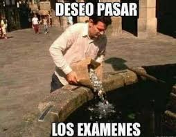

2020
Objetivos 2020
-
Profesorado de matemáticas
-
Rendir en julio el examen de fundamentos de la matemática
-
Jovenes a programar
-
Si sale el segundo año, anotarme y cursarlo.
Plan de acción
-
Organización de horario de estudio domiciliarias
-
40hs semanales
-
Fundamentos de la matemática
-
20hs Estudio de teórico
-
20hs Estudio de prácticos
-
Mantenerme al tanto de jovenes a programar para saber si sale el segundo año y poder realizar la inscripción.
